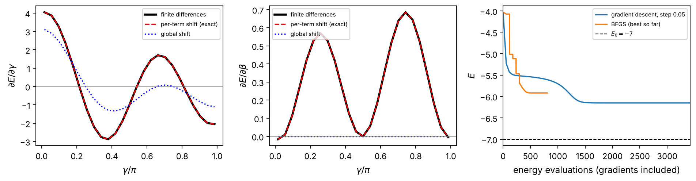
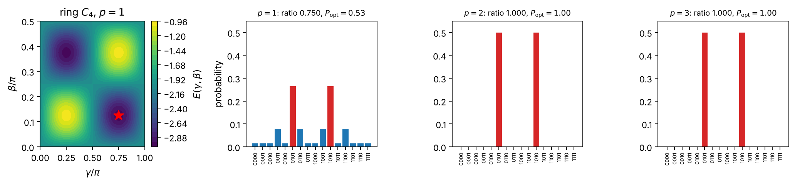
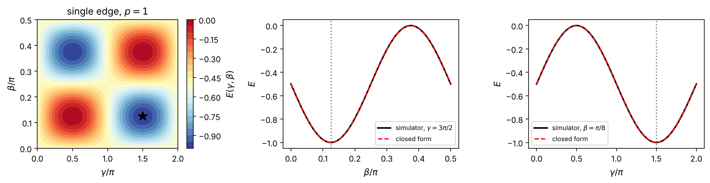
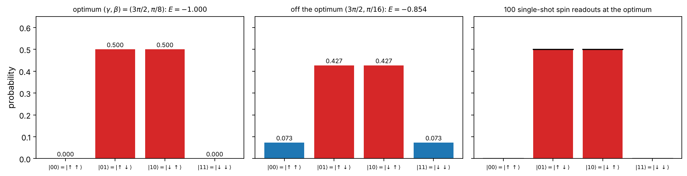
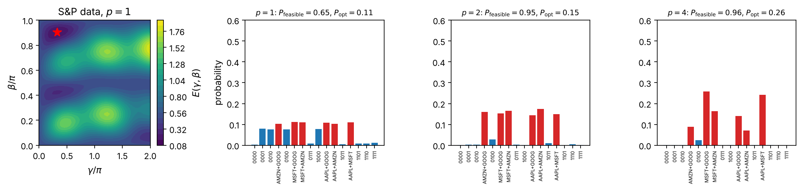
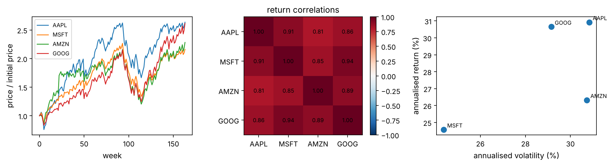
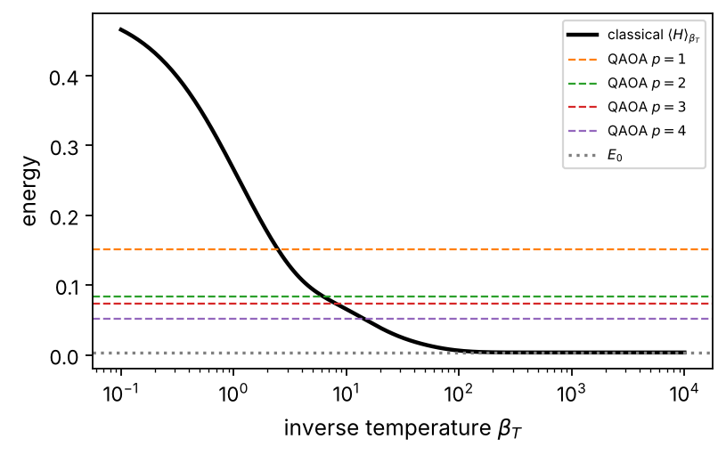
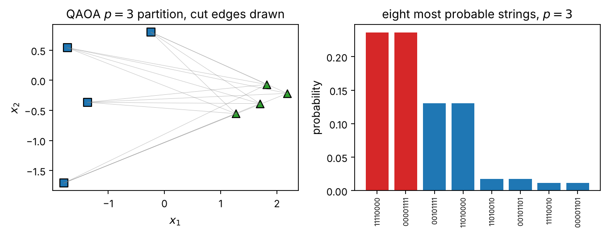

Chapter 3: The Quantum Approximate Optimization Algorithm#
The quantum approximate optimization algorithm is the simplest variational quantum circuit and the one whose purpose is easiest to state: find the bit string that minimizes a cost. The chapter builds the pipeline from a combinatorial problem to a quadratic unconstrained binary optimization, from there to an Ising model and a diagonal cost Hamiltonian, and from the Hamiltonian to the alternating circuit of phase separators and transverse-field mixers, derived from adiabatic evolution by Trotterization and written out gate by gate. The single-edge instance is solved by hand, the algorithm is run on a ring and on a six-vertex graph, and its performance, landscape and gate cost are discussed. Gradients require the parameter-shift rule applied term by term, since the generators have many eigenvalues. Two electron spins in a double quantum dot, coupled by the exchange interaction, implement the one-edge instance natively, and the selection of a portfolio of stocks from real price data shows the pipeline on a constrained problem, with the penalty method, its tuning and the connection to thermal states. The chapter closes by reading QAOA as a machine-learning model: a clustering algorithm, a quantum neural network with a problem-fixed architecture, a feature map and a sampler.
# Put every BookPrograms/chapter*/ and BookPrograms/common/ on sys.path
import sys, pathlib
root = pathlib.Path.cwd().resolve()
while not (root / 'BookPrograms').is_dir() and root.parent != root:
root = root.parent
sys.path[:0] = [str(p) for p in (root / 'BookPrograms').iterdir() if p.is_dir()]
import numpy as np
Introduction#
The quantum support-vector machine of Chapter 2 used the quantum computer for one thing only, to evaluate a kernel; the learning was classical and convex, and, the trainable kernels of its last section apart, there were no parameters on the quantum side. This chapter introduces the other way of using the machine, which the rest of the book will follow: a circuit with adjustable angles, an expectation value that depends on them, and a classical optimizer that moves the angles downhill. The quantum approximate optimization algorithm (QAOA) of Farhi, Goldstone and Gutmann [Farhi2014] is the simplest and the most structured example of such a variational circuit, and it is also the one whose purpose is easiest to state: it looks for the bit string that minimizes a cost function, by preparing a quantum state whose measurement outcomes are concentrated on good bit strings.
The algorithm is a bridge in two directions. Towards physics, it is a variational eigensolver for an Ising Hamiltonian, the problem is written as a classical spin glass, and its ansatz is the Trotterized form of adiabatic quantum evolution, so that the reader of the companion volume [QCbook] will recognize every ingredient: its chapter on variational quantum algorithms introduces QAOA in a section of its own, after the variational principle, the ansätze, the measurement of a Pauli sum and the parameter-shift rule, and the present chapter continues from there, with the relation between its sign convention for the cost Hamiltonian and ours made explicit in Section From a cost function to a Hamiltonian. Towards machine learning, it is a parametrized circuit trained by gradient descent on a cost, the data of a problem enter through the Hamiltonian, and the variational classifiers and generative models of Chapters 4 and 5 differ from it only in where the data and the parameters sit. We develop both directions.
The chapter is organized as follows. Section From a cost function to a Hamiltonian sets up
the problem: combinatorial optimization over bit strings, its quadratic
unconstrained binary form (QUBO), the change of variables that turns it
into an Ising model, and the cost Hamiltonian, with MaxCut as the
running example. Section The algorithm defines the algorithm, derives
its ansatz from adiabatic evolution by Trotterization, and gives the
circuit gate by gate. Section The algorithm at work solves the smallest
instance, a single edge, by hand, runs the algorithm on a four-vertex
ring and a six-vertex graph, and discusses what is known about its
performance, its landscape and its cost in gates. Section Gradients
is about gradients, where the parameter-shift rule of Chapter 2
meets a complication, generators with many eigenvalues, and where a
simple per-term rule resolves it. Section A physical register: two electrons in a double quantum well leaves
the abstract register for a physical one: two electrons in a double
quantum well whose exchange interaction implements the cost unitary,
following a recent two-qubit experiment [Roscher2026].
Section An application: selecting a portfolio applies the pipeline to a problem outside
physics, the selection of a portfolio of stocks from real price data,
and uses it to discuss constraints, penalties and the connection to the
statistical mechanics of spin glasses. Section QAOA as a machine-learning model returns
to the question of the book and reads QAOA as a machine-learning model,
with clustering as the example. The programs are in
BookPrograms/chapter3/: a QUBO and an Ising
class, a QAOA class on the simulator of the earlier chapters
with the three gradient rules, and the scripts of the experiments.
Every number quoted below is printed by one of them.
From a cost function to a Hamiltonian#
Binary optimization. A combinatorial optimization problem asks for the bit string \(\vec{x}=(x_1,\dots,x_n)\in\{0,1\}^n\) that minimizes a cost function \(C:\{0,1\}^n\to\mathbb{R}\),
The search space has \(2^n\) elements, and for the problems of interest, the NP-hard ones, no algorithm is known that finds \(\vec{x}^{*}\) in time polynomial in \(n\) for every instance. One settles for approximations, and measures their quality by the approximation ratio, the value achieved divided by the optimum; for a minimization with negative costs, which is how MaxCut will appear below, the ratio \(\alpha=C(\vec{x})/C(\vec{x}^{*})\le1\), and the closer to one the better.
QUBO. A large class of such problems can be written with a cost that is quadratic in the bits,
with a real symmetric matrix \(\matr{Q}\) and a constant \(c_0\); since \(x_i^2=x_i\) for a bit, the diagonal of \(\matr{Q}\) carries the linear terms. This is quadratic unconstrained binary optimization, QUBO [Kochenberger2014], and Lucas’s catalog [Lucas2014] shows how partitioning, covering, coloring, scheduling and satisfiability problems are brought into this form, constraints included, by adding penalty terms. QUBO is itself NP-hard, so nothing is lost in generality, and everything is gained in uniformity: a single algorithm for Eq. (3.2) is an algorithm for all of them.
From bits to spins. The substitution
turns a bit into a classical spin, with \(x_i=0\) the spin \(z_i=+1\) and \(x_i=1\) the spin \(z_i=-1\). Inserting it into Eq. (3.2) and collecting the terms by their degree in the spins gives an Ising model,
with, for symmetric \(\matr{Q}\),
The derivation is a few lines (Exercise 3.1): the product
\(x_ix_j=(1-z_i)(1-z_j)/4\) contributes \(z_iz_j/4\), \(-z_i/4\), \(-z_j/4\)
and a constant, each appearing twice in the double sum of
Eq. (3.2), and the linear term \(Q_{ii}x_i\) contributes
\(-Q_{ii}z_i/2\) and \(Q_{ii}/2\). Minimizing \(C\) over bit strings is
finding the ground state of the Ising model, a problem that
statistical physics has studied for a century, and whose hardness,
for couplings \(J_{ij}\) of both signs that cannot all be satisfied at
once, is the frustration of a spin glass.
The class QUBO of qubo.py carries out the substitution
and the class Ising lists the energies of all bit strings:
import numpy as np
from qubo import QUBO, bitstrings
q = QUBO([[1, -2], [-2, 1]]) # C(x) = x1 + x2 - 4 x1 x2, Table 3-qubo
ising = q.to_ising() # Eq. (3-qubotoising)
print("J_12 =", ising.J[0, 1], " h =", ising.h, " const =", ising.const)
for x, c, e in zip(bitstrings(2), q.costs(), ising.energies()):
print(x, 1 - 2 * x, c, e) # bits, spins, C(x), H(z) + const
ring = QUBO.maxcut(4, [(0, 1), (1, 2), (2, 3), (3, 0)]).to_ising()
print("ring: ground energy", ring.ground_state()[0], "= minus", 4, "cut edges")
J_12 = -1.0 h = [0.5 0.5] const = 0.0
[0 0] [1 1] 0.0 0.0
[0 1] [ 1 -1] 1.0 1.0
[1 0] [-1 1] 1.0 1.0
[1 1] [-1 -1] -2.0 -2.0
ring: ground energy -4.0 = minus 4 cut edges
\(\vec{x}\) |
\(\vec{z}\) |
\(C(\vec{x})\) |
\(H(\vec{z})+c\) |
|---|---|---|---|
\((0,0)\) |
\((+1,+1)\) |
\(0\) |
\(0\) |
\((0,1)\) |
\((+1,-1)\) |
\(1\) |
\(1\) |
\((1,0)\) |
\((-1,+1)\) |
\(1\) |
\(1\) |
\((1,1)\) |
\((-1,-1)\) |
\(-2\) |
\(-2\) |
Table 3.1: The QUBO with \(\matr{Q}=\bigl(\begin{smallmatrix}1&-2\\-2&1\end{smallmatrix}\bigr)\),
\(C(\vec{x})=x_1+x_2-4x_1x_2\), and its Ising form
\(H(\vec{z})=-z_1z_2+\tfrac12(z_1+z_2)\), \(c=0\), by
Eq. (3.5). From qubo.py.
From spins to qubits. A classical spin \(z_i=\pm1\) is the eigenvalue of the Pauli operator \(Z_i\) on the computational basis states \(\vert0\rangle\) and \(\vert1\rangle\) of qubit \(i\), and the substitution \(z_i\to Z_i\) turns Eq. (3.4) into the cost Hamiltonian
It is diagonal in the computational basis, every bit string is an eigenstate with its cost as the eigenvalue, and the optimal bit string is the ground state. The whole of the chapter is about preparing a state of \(n\) qubits that has a large overlap with that ground state. We use the conventions of Chapter 1: qubit \(0\) is the leftmost factor, \(\vert0\rangle\leftrightarrow z=+1\leftrightarrow x=0\).
MaxCut. The example that every discussion of QAOA starts from is MaxCut. Given a graph \(G=(V,E)\) with weights \(w_{ij}\) on its edges, split the vertices into two sets so that the total weight of the edges running between the sets, the cut, is as large as possible. With \(x_i=1\) for the vertices of one set, an edge is cut when \(x_i\ne x_j\), which the quadratic expression \(x_i+x_j-2x_ix_j\) detects, so the cut and the cost to be minimized are
The substitution of Eq. (3.3) gives \(x_i+x_j-2x_ix_j=(1-z_iz_j)/2\) and therefore
an antiferromagnetic Ising model, \(J_{ij}=w_{ij}/2\), without fields
and with the constant \(c=-\frac12\sum w_{ij}\); the ground-state energy is
minus the maximum cut. MaxCut is NP-hard; the best classical algorithm
with a guarantee, the semidefinite relaxation of Goemans and Williamson
[GoemansWilliamson1995], achieves an approximation ratio of
\(0.878\) on every graph, and it is widely believed that no polynomial
algorithm does better in the worst case. Our running example is the
ring of four vertices, \(C_4\), with edges \((0,1)\), \((1,2)\), \((2,3)\),
\((3,0)\) and unit weights, whose Hamiltonian
\(H_C=\frac12(Z_0Z_1+Z_1Z_2+Z_2Z_3+Z_3Z_0)-2\) has the ground energy
\(-4\), all four edges cut, at the two alternating strings \(0101\) and
\(1010\); the program qubo.py checks this against the cut of
every bit string. We follow the sign convention of
Eq. (3.8), minimizing \(\langle H_C\rangle\), throughout
the chapter, since it is the one in which QUBO, the double well and the
portfolio all appear; the original paper and the companion volume
maximize the cut operator \(-H_C\) instead, which amounts to the sign
change \(\gamma\to-\gamma\) in everything that follows.
The algorithm#
The variational principle. For any state, \(\langle\psi\vert H_C\vert\psi\rangle\ge E_0\), with equality only in the ground-state eigenspace, and the expectation value of a diagonal operator is the average cost over the measurement distribution,
A variational algorithm restricts \(\vert\psi\rangle\) to a family \(\vert\psi(\vec{\theta})\rangle\) prepared by a circuit, minimizes Eq. (3.9) over \(\vec{\theta}\) with a classical optimizer, and reads out bit strings from the optimized state. The variational quantum eigensolver of the companion volume [QCbook] does this for molecular and nuclear Hamiltonians with chemistry-inspired or hardware-efficient circuits. QAOA is a variational quantum eigensolver whose circuit is dictated by the problem.
The mixer and the ansatz. The second ingredient is the mixing Hamiltonian
a transverse field. It does not commute with \(H_C\), so that alternating the two generates transitions between bit strings, and the ground state of \(-H_M\) is the uniform superposition \(\vert+\rangle^{\otimes n}=H^{\otimes n}\vert0\rangle^{\otimes n}=2^{-n/2}\sum_{\vec{x}}\vert\vec{x}\rangle\), which is also the state of complete ignorance about the answer. The depth-\(p\) QAOA state is
with the factor \(k=1\) acting first, and the \(2p\) angles \(\vec{\gamma}=(\gamma_1,\dots,\gamma_p)\), \(\vec{\beta}=(\beta_1,\dots,\beta_p)\) are the variational parameters. Each layer first applies the phase separator \(U_C(\gamma)=e^{-i\gamma H_C}\), which is diagonal and writes the cost of every bit string into its phase, \(U_C(\gamma)\vert\vec{x}\rangle=e^{-i\gamma C(\vec{x})}\vert\vec{x}\rangle\), and then the mixer \(U_M(\beta)=e^{-i\beta H_M}=\bigotimes_iR_x(2\beta)\), a product of single-qubit rotations, which turns the phases into amplitudes by interference. The algorithm minimizes \(E_p(\vec{\gamma},\vec{\beta})=\langle\psi_p\vert H_C\vert\psi_p\rangle\), and the claim of Farhi et al. is that \(\min E_p\to E_0\) as \(p\to\infty\). The landscape is \(2\pi\)-periodic in every \(\gamma_k\) when the costs are integers, as in unweighted MaxCut, and \(\pi\)-periodic in every \(\beta_k\), since \(e^{-i\pi H_M}=(-1)^nI\); for a cost without field terms, such as Eq. (3.8), the period in \(\beta\) is even \(\pi/2\), since \(e^{-i(\pi/2)H_M}=(-i)^nX^{\otimes n}\) is a global phase times the flip of all bits, which leaves such an \(H_C\) invariant.
Where the ansatz comes from. The form of Eq. (3.11) is not a guess. Adiabatic quantum computation [Farhi2001,Albash2018] prepares the ground state of \(H_C\) by starting in the ground state of \(H_M\) and evolving under the interpolating Hamiltonian
for a time \(T\) long compared with the inverse square of the smallest gap of \(H(s)\); the adiabatic theorem then keeps the system in the instantaneous ground state, and the final state is the answer. (The sign of \(H_M\) is chosen so that \(\vert+\rangle^{\otimes n}\) is its ground state; it is a convention, since \(\beta\to-\beta\) undoes it.) Discretize the evolution into \(p\) steps of length \(\Delta t=T/p\) at \(s_k=k/p\), and split each step by the first-order Trotter formula of the companion volume,
The product over \(k\) is exactly Eq. (3.11) with the schedule \(\gamma_k=s_k\Delta t\), \(\beta_k=-(1-s_k)\Delta t\). QAOA takes this circuit and frees the angles: instead of following the schedule, which is only guaranteed to work for a very long \(T\) and therefore a very large \(p\), it lets a classical optimizer choose \(\vec{\gamma},\vec{\beta}\) for the \(p\) at hand. At \(p\to\infty\) the adiabatic schedule is among the admissible parameters and the minimum of \(E_p\) reaches \(E_0\); at small \(p\) the optimized angles are usually nothing like a schedule, and the algorithm is a different object, closer to a learned control protocol [Brady2021,Zhou2020] than to an approximation of adiabatic evolution. The commutator in Eq. (3.13) is what makes the circuit non-trivial: for MaxCut, with \([Z_a,X_b]=2i\delta_{ab}Y_a\), \([H_C,H_M]=i\sum_{(i,j)\in E}w_{ij}(Y_iZ_j+Z_iY_j)\), and it is this operator that generates entanglement between the qubits of an edge.
The circuit. Both unitaries have an exact, short circuit. Each term of \(H_C\) is a Pauli string that is diagonal in the computational basis, and the terms commute, so \(U_C(\gamma)\) is a product of one gate per term: \(e^{-i\gamma h_iZ_i}=R_z(2\gamma h_i)\) for a field, and for a coupling
the same gadget as the ZZ feature map of Chapter 2: the first CNOT writes the parity \(z_iz_j\) into qubit \(j\), the rotation applies the phase, and the second CNOT restores the qubit. The mixer is \(R_x(2\beta)\) on every qubit. Figure 3.1 draws one layer for a path of three vertices, and the gate count of a layer is
with \(n_h\) the number of nonzero fields, plus the \(n\) Hadamards of the initial state. Every gate of the phase separator can be applied in parallel with the gates of the edges that share no vertex, so that the depth of a layer is set by the degree of the graph rather than by its size. On the simulator, we exploit a different structure: the phase separator is an elementwise phase on the \(2^n\) amplitudes, and the mixer is diagonal in the \(X\) basis,
so that one layer costs two Hadamard transforms and two phases. This is
how the class QAOA of qaoa.py prepares
Eq. (3.11); stripped of the bookkeeping for the
parameter shifts of Section Gradients, its core is
import numpy as np
from qubo import QUBO, bitstrings
ising = QUBO.maxcut(4, [(0, 1), (1, 2), (2, 3), (3, 0)]).to_ising()
n, cost = ising.n, ising.energies() # C(z) for every bit string
z = 1 - 2 * bitstrings(n) # z_q = +-1 per bit string and qubit
H1 = np.array([[1, 1], [1, -1]]) / np.sqrt(2)
Hn = H1
for _ in range(n - 1):
Hn = np.kron(Hn, H1) # H^{(x)n}
def qaoa_state(gammas, betas):
psi = np.full(2 ** n, 2 ** (-n / 2), dtype=complex) # |+>^n
for gamma, beta in zip(gammas, betas):
psi = np.exp(-1j * gamma * cost) * psi # phase separator
psi = Hn @ (np.exp(-1j * beta * z.sum(1)) * (Hn @ psi)) # mixer, Eq. (3-mixerwht)
return psi
psi = qaoa_state([np.pi / 4], [3 * np.pi / 8])
print("E =", np.real(np.vdot(psi, cost * psi))) # -3: three of four edges cut
E = -2.999999999999997

Figure 3.1: One layer of the QAOA circuit for MaxCut on the path \(0-1-2\) (qubit \(0\) on the top wire). After the Hadamards that prepare \(\vert+\rangle^{\otimes3}\), each edge contributes the gadget of Eq. (3.14), CNOT, \(R_z(2\gamma J_{ij})=R_z(\gamma w_{ij})\) on the target, CNOT, the constant of \(H_C\) being a global phase; the mixer is one \(R_x(2\beta)\) per qubit. Deeper circuits repeat the two blocks with new angles before the measurement.
The loop. The classical optimizer sees only the function \(E_p(\vec{\gamma},\vec{\beta})\), estimated on a quantum computer by preparing the state, measuring all qubits, and averaging the cost of the outcomes over \(S\) shots, with the statistical error \(\sigma_C/\sqrt{S}\) of Chapter 1. The optimizer may be gradient-free (Nelder–Mead, COBYLA, or the stochastic approximation of the companion volume) or use the gradients of Section Gradients; since the landscape has many local minima, it is run from several random starting points, and since the optimal angles at depth \(p\) are a good start for depth \(p+1\) [Zhou2020], we also start the depth-\((p+1)\) search from the depth-\(p\) optimum with one layer appended (the warm start). The output is not the energy but a bit string: the optimized state is sampled, and the best bit string among the samples is returned. Since the state is a superposition, this best string is usually better than the average, and the probability of sampling an optimal string is a more honest figure of merit than the approximation ratio of the energy.
The algorithm at work#
One edge, by hand#
The smallest instance, two vertices and one edge, can be solved completely in closed form, and the calculation shows how the two layers of the circuit cooperate. With \(H_C=-\frac12(I-Z_0Z_1)\) and \(H_M=X_0+X_1\) the \(p=1\) state is \(\vert\psi\rangle=e^{-i\beta(X_0+X_1)}e^{-i\gamma H_C}\vert{+}{+}\rangle\), and we need \(\langle Z_0Z_1\rangle\). Rather than computing the state, we move the operator through the circuit, the Heisenberg picture. The mixer rotates each \(Z\) about the \(x\) axis,
(using \(ZX=iY\) and that \(Z\) anticommutes with \(X\)), so that
The phase separator, \(e^{-i\gamma H_C}=e^{i\gamma/2}e^{-i\gamma Z_0Z_1/2}\), commutes with \(Z_0Z_1\) and with \(Y_0Y_1\) and leaves them unchanged; its generator \(Z_0Z_1\) anticommutes with \(Z_0Y_1\), for which
since \(Y_1Z_1=iX_1\), and likewise \(Y_0Z_1\to\cos\gamma\,Y_0Z_1+\sin\gamma\,X_0\). In \(\vert{+}{+}\rangle\) every operator containing a \(Y\) or a \(Z\) has expectation zero and \(\langle X_0\rangle=\langle X_1\rangle=1\), so that \(\langle Z_0Z_1\rangle=2\sin(2\beta)\cos(2\beta)\sin\gamma=\sin(4\beta)\sin\gamma\), and
The minimum \(E_1=-1\), the exact ground energy, is reached at
\(\sin(4\beta)\sin\gamma=-1\), for instance \(\beta^{*}=\pi/8\),
\(\gamma^{*}=3\pi/2\) (equivalently \(-\pi/2\)). The program
qaoa.py checks Eq. (3.18) against the simulator
on a grid, to \(10^{-15}\), and prints the optimal state,
\(\frac{1}{\sqrt2}(\vert01\rangle+\vert10\rangle)\) up to a phase: the
equal superposition of the two optimal cuts, a Bell state, with a
single measurement giving an optimal bit string with certainty. One
layer suffices because the problem has one edge; we shall return to
this state in Section A physical register: two electrons in a double quantum well, where the two qubits are
two electron spins.
The same Heisenberg calculation on a general graph gives the \(p=1\) energy edge by edge [Farhi2014]: the expectation of \(Z_iZ_j\) depends only on the edges adjacent to \((i,j)\), and for a triangle-free graph in which \(i\) and \(j\) have degrees \(d_i\) and \(d_j\), \(\langle Z_iZ_j\rangle=\frac12\sin(4\beta)\sin\gamma\,(\cos^{d_i-1}\gamma+\cos^{d_j-1}\gamma)\), which for the ring, \(d=2\), gives
also verified by maxcut.py. Its minimum is \(-3\): one layer
cuts three of the four edges, an approximation ratio of \(3/4\). This
locality is general. At depth \(p\) the expectation of an edge
term depends only on the subgraph within distance \(p\) of the edge, its
light cone, because each layer of the circuit spreads the operator by
one edge; the QAOA energy at fixed \(p\) is therefore a sum of local
contributions, and the algorithm cannot see global structure, such as
whether the graph is bipartite, until \(p\) is comparable to the
diameter of the graph [FarhiHarrow2016,Bravyi2020].
The ring and a six-vertex graph#
Table 3.2 and Fig. 3.2 show the algorithm on the ring \(C_4\), with eight random starts of the BFGS optimizer per depth and the warm start from the previous depth. At \(p=1\) the optimizer finds \(\gamma=3\pi/4\), \(\beta=\pi/8\) (mod the periods), one of the two minima of Eq. (3.19), with \(E=-3\) and a probability \(0.53\) of reading one of the two optimal strings; the landscape in the first panel has four extrema, two equivalent minima and two equivalent maxima, related by the symmetries \((\gamma,\beta)\to(\gamma+\pi/2,\beta+\pi/4)\) of the ring. At \(p=2\) the state is exactly the superposition of the two optimal cuts, \(E=-4\) and \(P_{\mathrm{opt}}=1\): the light cone of two layers covers the whole ring, and two layers are enough to prepare the ground state. This is the general pattern on small bipartite graphs and should not be mistaken for a property of the algorithm.
ring \(C_4\) |
six-vertex graph |
|||||
|---|---|---|---|---|---|---|
\(p\) |
\(\langle H_C\rangle\) |
ratio |
\(P_{\mathrm{opt}}\) |
\(\langle H_C\rangle\) |
ratio |
\(P_{\mathrm{opt}}\) |
1 |
\(-3.000\) |
0.750 |
0.531 |
\(-5.469\) |
0.781 |
0.187 |
2 |
\(-4.000\) |
1.000 |
1.000 |
\(-6.150\) |
0.879 |
0.364 |
3 |
\(-4.000\) |
1.000 |
1.000 |
\(-6.455\) |
0.922 |
0.542 |
4 |
\(-6.680\) |
0.954 |
0.768 |
Table 3.2: QAOA on MaxCut of the ring \(C_4\) (maximum cut 4) and of the
six-vertex graph with edges \((0,1),(1,2),(2,3),(3,4),(4,5),(5,0),(0,2),(1,4)\)
(maximum cut 7 of 8). Energy \(\langle H_C\rangle\), approximation ratio
\(\langle H_C\rangle/E_0\) and probability of an optimal string at the
optimized angles, eight random starts plus the warm start. From
maxcut.py.

Figure 3.2: MaxCut on the ring \(C_4\). Left: the \(p=1\) landscape \(E_1(\gamma,\beta)\) of Eq. (3.19) with the optimum found by the optimizer (star). Right: the output distributions of the optimized states for \(p=1,2,3\); the two optimal strings are in red. From maxcut.py.
The second half of Table 3.2 is a graph with a triangle, the six-ring with the chords \((0,2)\) and \((1,4)\), which is not bipartite, so that no cut takes all eight edges; the maximum is seven, reached by two strings. Here the ratio climbs from \(0.78\) at \(p=1\) to \(0.95\) at \(p=4\), and the probability of sampling an optimal string from \(0.19\) to \(0.77\), with no sign of the exact solution at any depth we tried. The light-cone argument says why: already a two-layer circuit on a graph of diameter two can see everything, but seeing is not solving, and the optimized angles at small \(p\) balance the terms of Eq. (3.9) rather than satisfying them. Each layer on this graph costs 16 CNOTs, 8 \(R_z\) and 6 \(R_x\) gates, by Eq. (3.15).
Performance, landscape and cost#
What is known in general is less than one might hope. At \(p=1\) the ratio for unweighted \(3\)-regular graphs is at least \(0.6924\) [Farhi2014], below the \(0.878\) of Goemans and Williamson, and the bounds improve slowly with \(p\); for worst-case instances the locality argument shows that a constant \(p\) cannot beat the classical guarantee, and that \(p\) must grow with the size of the graph [Bravyi2020]. On typical instances the algorithm does much better than its worst-case bounds, and the \(p\) needed for a given ratio has been studied numerically up to tens of qubits [Zhou2020]; an early large hardware demonstration ran MaxCut on up to 23 qubits [Harrigan2021], with the noise of the device visible in a performance that peaked at \(p=3\) and decreased beyond. Whether QAOA at any feasible depth offers an advantage over the best classical heuristics for optimization is an open question, and the case for it rests on the facts that the circuit is shallow, that its output cannot in general be sampled classically even at \(p=1\) [FarhiHarrow2016], and that it is a natural fit for the hardware.
The landscape \(E_p(\vec{\gamma},\vec{\beta})\) is a trigonometric polynomial in the angles, smooth and periodic. At \(p=1\) it is simple enough to scan, as Fig. 3.2 did, and often to write down. As \(p\) grows it acquires the many local minima of a glassy function, and the optimization becomes the hard part of the algorithm; the warm start and the observation that the optimal angles vary smoothly with \(p\) and transfer between instances of the same class [Zhou2020,Egger2021] are the practical answers. The barren plateaus of Chapter 1 are milder here than for a generic circuit: the cost is a sum of two-body terms, the circuit has only two parameters per layer, and for constant \(p\) the gradient of an edge term involves only its light cone, so that the variance of the gradient decays polynomially rather than exponentially with \(n\). They do return when \(p\) grows with \(n\).
Finally, the cost in gates. A layer costs the \(2\vert E\vert+\vert E\vert+n\) gates of Eq. (3.15), and with a two-qubit error rate \(\epsilon\) the fidelity of the whole circuit decays as \((1-\epsilon)^{2p\vert E\vert}\). For a graph with \(n=100\) vertices and \(\vert E\vert=500\) edges and \(\epsilon=10^{-3}\), a single layer already has a thousand CNOTs and a fidelity of \(e^{-1}\); the depths of Table 3.2 are affordable only on small graphs or with much better gates, and the demonstrations on hardware have accordingly used small \(p\) and error mitigation. This arithmetic, more than any theorem, sets the near-term scope of the algorithm.
Gradients#
The optimizers themselves, gradient descent with and without momentum,
Adam and BFGS, are those of the optimization chapter of the
machine-learning text [MLbook], implemented in
common/optimize.py; what is specific to a circuit is how the
gradient is obtained. The optimizer needs \(\partial E/\partial\gamma_k\) and
\(\partial E/\partial\beta_k\), and the parameter-shift rule of
Chapter 2 seems to supply them: for a gate \(e^{-i\theta P}\)
with \(P^2=I\), \(\partial_\theta f=f(\theta+\pi/4)-f(\theta-\pi/4)\) (the
rule of Chapter 2 written for \(e^{-i\theta P}\) rather
than \(e^{-i\theta P/2}\), which halves the shift and removes the factor
\(\tfrac12\)). The
generators here are \(H_C\) and \(H_M\), and neither squares to the
identity. The naive application of the rule to the whole angle,
is therefore not a derivative but a finite difference with a large step, and Fig. 3.3 shows how wrong it is on the six-vertex graph: for \(\gamma\) it has the right sign most of the time and the wrong magnitude everywhere, and for \(\beta\) it returns zero along the whole line, because the two shifted mixers differ by \(e^{-i(\pi/2)\sum_qX_q}=(-i)^nX^{\otimes n}\), the flip of all bits, which leaves a field-free \(H_C\) invariant, so that \(E(\beta+\pi/4)=E(\beta-\pi/4)\) identically.
The correct rule follows from the structure of the unitaries. The phase separator is a product of commuting gates, one per Pauli term \(P_a\) of \(H_C=\sum_ac_aP_a\), each with its own angle \(\theta_a=\gamma c_a\), and the mixer is a product of one gate per qubit with angle \(\beta\). The chain rule gives
where the shift is applied to the angle of one term, or of one qubit,
in layer \(k\) only, with all other angles at their values. Each
evaluation is a circuit that differs from the original by one gate
angle, so the rule is exact and hardware-compatible
[Schuld2019gradients,Crooks2019,Wierichs2022], and it costs
\(2(K+n)\) energy evaluations per layer, with \(K\) the number of terms;
Fig. 3.3 shows it agreeing with central finite
differences to \(10^{-9}\). (The finite-difference gradient is exact on a
noiseless simulator and useless on hardware, where a step small enough
to approximate the derivative is swamped by shot noise; the shift rule
uses steps of order one.) Terms that commute and act on disjoint
qubits can share a shift, which brings the cost down to the number of
commuting groups, and for the two angles per layer of QAOA the whole
gradient is cheap compared with the gradient of a generic circuit
with hundreds of parameters.
In qaoa.py the rule reads, with self.terms the list of
terms \((c_a,P_a,\dots)\) and energy(params, shift) evaluating the circuit with
one angle shifted:
import numpy as np
from qubo import QUBO
from qaoa import QAOA
q = QAOA(QUBO.maxcut(4, [(0, 1), (1, 2), (2, 3), (3, 0)]).to_ising(), p=1)
x, s = np.array([0.8, 0.5]), np.pi / 4
def gradient_shift(q, x): # Eq. (3-pertermshift)
g = np.zeros(2 * q.p)
for k in range(q.p):
for a, (c, d, _) in enumerate(q.terms):
g[k] += c * (q.energy(x, (k, "cost", a, +s)) - q.energy(x, (k, "cost", a, -s)))
for qubit in range(q.n):
g[q.p + k] += q.energy(x, (k, "mixer", qubit, +s)) - q.energy(x, (k, "mixer", qubit, -s))
return g
print(gradient_shift(q, x), q.gradient_fd(x), q.gradient_global_shift(x))
[-0.0531021 -1.66387757] [-0.0531021 -1.66387757] [-0.0531021 0. ]

Figure 3.3: Gradients of the \(p=1\) energy of the six-vertex graph along the line \(\beta=0.4\): central finite differences, the per-term parameter-shift rule of Eq. (3.21), and the naive global shift of Eq. (3.20), for \(\gamma\) (left) and \(\beta\) (middle). Right: plain gradient descent with the shift-rule gradient against BFGS from the same random start at \(p=2\), with the cost counted in energy evaluations (a gradient costs \(2p(K+n)=56\) of them). From maxcut.py.
The third panel of Fig. 3.3 compares two optimizers fed with the same gradient from the same start on the six-vertex graph at \(p=2\). Plain gradient descent with step \(0.05\) reaches \(-6.15\), the best value of Table 3.2, after sixty steps and \(3420\) energy evaluations; BFGS converges in fifteen iterations and \(865\) evaluations, but to a local minimum at \(-5.92\), which a second start would have fixed. Both behaviors are typical: the landscape rewards a cheap optimizer with many restarts over an expensive one with few, and on hardware, where every evaluation costs thousands of shots, the count of evaluations is the figure to watch.
A physical register: two electrons in a double quantum well#
Everything so far was simulated on abstract qubits. The smallest QAOA instance, one edge, needs two of them, and there is a physical system in which the two qubits and the cost unitary are both native: two electrons, one in each well of a double quantum dot, coupled by the exchange interaction. This is the spin-qubit platform of Loss and DiVincenzo [Loss1998], in which the first exchange gates were demonstrated by Petta et al. [Petta2005] and which is reviewed in [Burkard2023]; the following is a translation to it of a recent two-qubit QAOA experiment on a nitrogen-vacancy center [Roscher2026].
The system. Two spin-\(\frac12\) electrons are confined in the left and right wells \(L\), \(R\) of a double-well potential, in the regime where the tunnel coupling \(t\) between the wells is small compared with the on-site Coulomb energy \(U\) and the detuning keeps one electron in each well (the \((1,1)\) charge configuration). The orbital degrees of freedom are then frozen and the low-energy Hilbert space is that of two spins, \(\mathbb{C}^2\otimes\mathbb{C}^2\), with the qubit encoding \(\vert\!\uparrow\rangle=\vert0\rangle\), \(\vert\!\downarrow\rangle=\vert1\rangle\) on each electron. Second-order tunneling, allowed by the Pauli principle only for antiparallel spins, produces the effective exchange Hamiltonian
whose spectrum, printed by double_well.py, is the singlet
\(\vert S\rangle=\frac{1}{\sqrt2}(\vert\!\uparrow\downarrow\rangle-\vert\!\downarrow\uparrow\rangle)\)
at \(-3J/4\) and the three triplets \(\vert T_{+}\rangle=\vert\!\uparrow\uparrow\rangle\),
\(\vert T_0\rangle=\frac{1}{\sqrt2}(\vert\!\uparrow\downarrow\rangle+\vert\!\downarrow\uparrow\rangle)\),
\(\vert T_{-}\rangle=\vert\!\downarrow\downarrow\rangle\) at \(J/4\). The
coupling \(J\) is set by the gate voltages that control \(t\) and the
detuning, and can be switched on and off in nanoseconds.
The cost unitary from the exchange. The MaxCut Hamiltonian of the single edge, \(H_C=-\frac12(I-Z_LZ_R)\), has the cost \(0\) on \(\vert\!\uparrow\uparrow\rangle\) and \(\vert\!\downarrow\downarrow\rangle\) and \(-1\) on the two antiparallel configurations: the two cuts are the two ways of having one spin up and one down. Up to a constant and the factor \(2/J\), \(H_C\) is the Ising part of Eq. (3.22), \(\frac{J}{4}Z_LZ_R\), and if the flip-flop part \(X_LX_R+Y_LY_R\) is suppressed, which a Zeeman splitting between the two electrons larger than \(J\) does, free evolution under the exchange for a time \(t\) is the phase separator,
The mixer \(R_x(2\beta)\) on each spin is a microwave pulse in electron spin resonance (ESR), the initial Hadamards are two \(\pi/2\) pulses, the initial state \(\vert\!\uparrow\uparrow\rangle\) is prepared by spin polarization, and the readout is spin-to-charge conversion followed by charge sensing, one measurement per electron. Table 3.3 lists the correspondence. Every step of Eq. (3.11) is a standard operation on the platform, and the whole \(p=1\) circuit is a pulse sequence of a few hundred nanoseconds.
Circuit step |
Double-dot operation |
|---|---|
prepare \(\vert00\rangle=\vert\!\uparrow\uparrow\rangle\) |
spin-selective tunneling or optical pumping |
\(H\otimes H\) |
two simultaneous \(\pi/2\) ESR pulses |
\(e^{-i\gamma H_C}\), Eq. (3.14) |
exchange pulse of duration \(t=2\gamma/J\), Eq. (3.23) |
\(R_x(2\beta)\otimes R_x(2\beta)\) |
two individual ESR rotations |
measure \(Z_L\), \(Z_R\) |
spin-to-charge conversion, charge sensing |
Table 3.3: The \(p=1\) QAOA circuit for MaxCut on one edge and its implementation on a two-electron double quantum dot.
What the experiment measures. The landscape of the \(p=1\) energy is the closed form of Eq. (3.18), and Fig. 3.4 shows it with the simulator on top: the minimum \(E=-1\) at \((\gamma,\beta)=(3\pi/2,\pi/8)\), the maximum \(0\) at \((\pi/2,\pi/8)\), and the two sinusoidal slices through the optimum. At the optimum the state is the triplet \(\vert T_0\rangle\), with the overlap \(\vert\langle T_0\vert\psi^{*}\rangle\vert^2=1.000000\) printed by the program; it is not the singlet, the ground state of the full exchange Hamiltonian, because the flip-flop terms that single out the singlet are precisely the ones that the circuit does not use. Figure 3.5 shows the output distribution at the optimum and at a point off it, \((3\pi/2,\pi/16)\), where \(E=-0.854\) and the two cut states carry \(0.427\) each, together with \(100\) simulated single-shot spin readouts at the optimum: \(50\) of \(\vert\!\uparrow\downarrow\rangle\), \(50\) of \(\vert\!\downarrow\uparrow\rangle\), none of the parallel configurations. On a real device the two cut states would be read with a probability below one by the readout fidelity and the decoherence during the exchange pulse, and the landscape would be measured as a noisy surface over a grid of pulse parameters; the exact result is the reference against which such a measurement is compared. Deeper circuits change nothing here, as the last lines of the program confirm for \(p=2,3\): one edge is solved by one layer.

Figure 3.4: The \(p=1\) energy of the two-electron (single-edge) problem, \(E_1=-\tfrac12+\tfrac12\sin(4\beta)\sin\gamma\), Eq. (3.18): the landscape from the simulator with the optimum marked (left), and the slices through the optimum at fixed \(\gamma=3\pi/2\) (middle) and fixed \(\beta=\pi/8\) (right) against the closed form. From double_well.py.

Figure 3.5: Output distributions of the two-electron QAOA state at the optimum (left), off the optimum (middle), and \(100\) simulated single-shot readouts of the two spins at the optimum with the exact probabilities as bars (right). The cut states, antiparallel spins, are in red. From double_well.py.
An application: selecting a portfolio#
The pipeline cost function \(\to\) QUBO \(\to\) Ising \(\to\) cost Hamiltonian \(\to\) QAOA is the same whatever the problem, and the domain enters only through the matrix \(\matr{Q}\). To see it on a problem far from graphs, we take the oldest problem of quantitative finance, Markowitz’s mean-variance portfolio selection [Markowitz1952], in the combinatorial version that quantum-computing proposals for finance [Orus2019,Herman2023] usually consider.
The problem. There are \(n\) assets with expected returns \(\mu_i\) over some period and a covariance matrix \(\Sigma_{ij}\) of their returns; both are estimated from price histories. A portfolio that holds asset \(i\) or not is a bit string, and the investor wants a high return and a low variance,
with a risk-aversion parameter \(\lambda>0\) and a budget of exactly \(K\) assets. The constraint is the new element. QUBO has no constraints, and the standard device [Lucas2014] is to add the squared violation as a penalty,
with a strength \(A\) large enough that no infeasible portfolio has a lower cost than the best feasible one. Expanding the square and using \(x_i^2=x_i\) gives the QUBO of Eq. (3.2) with
and Eq. (3.5) turns it into an Ising model whose couplings \(J_{ij}=(\lambda\Sigma_{ij}+A)/2\) are all positive (the penalty and the covariances both discourage holding two assets at once) and whose fields are set by the returns. The couplings, being an empirical covariance matrix, are as good as random: the portfolio problem is a small spin glass, and the frustration that makes spin glasses hard is here the fact that the assets that return most are correlated with each other.
Two data sets.
The program portfolio.py uses two data sets of four assets
each, so that \(n=4\) qubits, \(K=2\), and all \(2^4\) portfolios can be
listed. The first is synthetic, with annualized returns
\((0.12,0.10,0.08,0.15)\) and a covariance matrix with variances
\(0.06\)–\(0.10\) and small positive covariances. The second is real:
164 weekly closing prices of Apple, Microsoft, Amazon and Alphabet from
January 2020 to December 2023, stored in sp500_weekly.csv and
drawn in Fig. 3.6, from which the weekly log returns
give annualized mean returns of \(30.9\), \(24.6\), \(26.3\) and \(30.7\)
percent, volatilities of \(30.8\), \(24.4\), \(30.7\) and \(29.2\) percent, and
correlations between \(0.80\) and \(0.94\): four large technology stocks
that moved together through the pandemic, the 2022 correction and the
2023 recovery. With \(\lambda=2\) the six feasible pairs have the costs
of Table 3.4; Microsoft and Alphabet, the two with the
lowest volatility and the second-highest return respectively, are the
best pair, by a margin of \(0.02\) over Apple and Microsoft, and the
worst pair, Apple and Amazon, is \(0.11\) away. The penalty \(A=0.3\)
exceeds every such difference and the ground state of the cost
Hamiltonian is the feasible optimum, as the program verifies by brute
force.

Figure 3.6: The data of the portfolio problem: weekly closing prices of the four stocks relative to January 2020 (left), the correlation matrix of their weekly log returns (middle), and their annualized return against volatility (right). From portfolio.py.
synthetic assets |
stocks |
||||
|---|---|---|---|---|---|
portfolio |
\(\vec{x}\) |
cost |
portfolio |
\(\vec{x}\) |
cost |
B+D |
0101 |
\(-0.060\) |
MSFT+GOOG |
0101 |
\(0.003\) |
C+D |
0011 |
\(-0.040\) |
AAPL+MSFT |
1100 |
\(0.026\) |
A+D |
1001 |
\(-0.020\) |
AAPL+GOOG |
1001 |
\(0.053\) |
A+C |
1010 |
\(-0.020\) |
MSFT+AMZN |
0110 |
\(0.054\) |
B+C |
0110 |
\(0.000\) |
AMZN+GOOG |
0011 |
\(0.108\) |
A+B |
1100 |
\(0.000\) |
AAPL+AMZN |
1010 |
\(0.112\) |
Table 3.4: The six feasible portfolios (\(K=2\)) of the two data sets and
their mean-variance cost \(-\vec{\mu}^{T}\vec{x}+\lambda\vec{x}^{T}\matr{\Sigma}\vec{x}\),
with \(\lambda=1\) (synthetic) and \(\lambda=2\) (stocks). From
portfolio.py.
QAOA on the stocks. Table 3.5 and Fig. 3.7 give the result for \(p=1\) to \(4\). Since the energies are no longer integers the approximation ratio is not a useful measure, and we report instead the fraction, closed by the optimized state, of the gap between the energy of the initial state \(\vert+\rangle^{\otimes n}\) (the average cost over all sixteen portfolios) and the ground energy,
together with the probability of sampling a feasible portfolio and the probability of sampling the optimal one. One layer closes \(70\) percent of the gap and concentrates \(65\) percent of the probability on the six feasible strings; four layers reach \(90\) percent and \(97\) percent, and the optimal pair, Microsoft and Alphabet, is the most probable outcome with \(0.26\). The distributions in Fig. 3.7 show what the algorithm does first: it learns the constraint. The penalty is the largest energy scale of the problem, the feasible strings are separated from the others by \(A=0.3\) while they differ among themselves by at most \(0.11\), and the first layers push the amplitude onto the feasible subspace, within which the ordering of the pairs is resolved only at larger \(p\). This is the generic weakness of penalty methods: the constraint consumes the expressive power of the circuit, and the alternative, a mixer that preserves the number of ones, the \(XY\) mixer of the quantum alternating operator ansatz [Hadfield2019], keeps the state inside the feasible subspace from the start and needs no penalty at all (Exercise 3.7).
synthetic assets (\(E_0=-0.060\)) |
stocks (\(E_0=0.003\)) |
|||||||
|---|---|---|---|---|---|---|---|---|
\(p\) |
\(E_p\) |
\(g_p\) |
\(P_{\mathrm{feas}}\) |
\(P_{\mathrm{opt}}\) |
\(E_p\) |
\(g_p\) |
\(P_{\mathrm{feas}}\) |
\(P_{\mathrm{opt}}\) |
1 |
\(0.072\) |
0.63 |
0.74 |
0.13 |
\(0.151\) |
0.70 |
0.65 |
0.11 |
2 |
\(-0.021\) |
0.89 |
0.99 |
0.17 |
\(0.083\) |
0.84 |
0.95 |
0.15 |
3 |
\(-0.023\) |
0.90 |
1.00 |
0.18 |
\(0.073\) |
0.86 |
0.95 |
0.15 |
4 |
\(-0.025\) |
0.90 |
1.00 |
0.20 |
\(0.052\) |
0.90 |
0.97 |
0.26 |
Table 3.5: QAOA for the two portfolio problems of Table 3.4
with the penalty \(A=0.3\): the energy, the fraction of the gap closed,
Eq. (3.27), and the probabilities of sampling a
feasible and the optimal portfolio from the optimized state (six random
starts plus the warm start). From portfolio.py.

Figure 3.7: The portfolio problem on the stock data. Left: the \(p=1\) landscape with the optimum found. Right: output distributions of the optimized states for \(p=1,2,4\); the six feasible portfolios are in red and labeled by their stocks. From portfolio.py.
The strength of the penalty. Table 3.6 varies \(A\) at \(p=2\). For \(A=0.03\) and \(0.1\) the ground state of \(H_C\) is the single stock Alphabet, a portfolio of the wrong size, because the gain from dropping a correlated asset exceeds the penalty, and the algorithm faithfully finds that wrong answer. For \(A=0.3\) the ground state is the right one and the feasible probability is \(0.95\). For \(A=1\) it is still the right one, but the feasible probability falls to \(0.66\) and the probability of the optimum hardly moves, because the penalty now dominates the landscape so completely that the angles are spent on it and the cost differences within the feasible subspace become invisible to two layers. The penalty must be large enough and no larger, and the right value is found by exactly the brute-force check that is impossible on the instances for which one would want a quantum computer; this is a known weakness of the method and one of the reasons for the constraint-preserving mixers mentioned above.
\(A\) |
ground state |
budget |
\(P_{\mathrm{feas}}\) |
\(P(\text{ground state})\) |
\(P(\text{MSFT+GOOG})\) |
|---|---|---|---|---|---|
0.03 |
0001 (GOOG) |
1 |
0.04 |
0.23 |
0.00 |
0.1 |
0001 (GOOG) |
1 |
0.14 |
0.22 |
0.04 |
0.3 |
0101 (MSFT+GOOG) |
2 |
0.95 |
0.15 |
0.15 |
1.0 |
0101 (MSFT+GOOG) |
2 |
0.66 |
0.15 |
0.15 |
Table 3.6: The effect of the penalty strength \(A\) on the stock data at
\(p=2\): the ground state of \(H_C\) and its budget, and the probabilities
of a feasible portfolio, of the ground state, and of the best feasible
pair MSFT+GOOG in the optimized QAOA state. From portfolio.py.
Thermal states and the variational state. The Ising energies of the sixteen portfolios define a classical partition function and a thermal average,
which decreases from the mean cost at infinite temperature to the ground energy as \(\beta_T\to\infty\); this is the energy of simulated annealing at temperature \(1/\beta_T\). Figure 3.8 draws it with the QAOA energies on top: \(p=1\) matches the thermal state at \(\beta_T\approx2.4\), \(p=2\) at \(6.4\), \(p=4\) at \(14.5\). The comparison is suggestive rather than deep. A QAOA state is pure, prepared by a unitary, and its distribution over bit strings is not a Boltzmann distribution; but the effective temperature it corresponds to is a convenient way of stating how far a given depth has cooled the problem, and it makes the point that the mixer plays the role that thermal fluctuations play in annealing, with real-time interference in the place of imaginary-time damping. The quantum Boltzmann machines of Chapter 5 make the thermal state itself the object of the computation.

Figure 3.8: The classical thermal energy of Eq. (3.28) of the stock-portfolio Ising model as a function of the inverse temperature, with the QAOA energies of Table 3.5 as horizontal lines. From portfolio.py.
QAOA as a machine-learning model#
Return to the general model of Eq. (1.1), \(f(\vec{x};\vec{\theta})=\langle0\vert U^{\dagger}W^{\dagger}\hat{O}WU\vert0\rangle\). In QAOA the observable is \(\hat{O}=H_C\), the trainable circuit is the alternation of Eq. (3.11), and the data enter not through an encoding \(U(\vec{x})\) of individual samples but through the Hamiltonian: \(H_C\) is built from a graph, a covariance matrix, a set of distances, and the circuit \(e^{-i\gamma H_C(\text{data})}\) is a feature map of the whole data set at once. Three consequences follow.
Clustering is MaxCut. The most direct learning task for the algorithm is unsupervised. Given \(N\) points \(\vec{x}_i\), split them into two groups so that points in different groups are far apart: with the similarity graph of all pairs and the weights
the partition that maximizes the weight of the cut is the two-way
clustering, a discrete relative of the problem that spectral clustering
relaxes [Ng2001] (Exercise 3.9), and a qubit per point turns it into QAOA on a weighted
complete graph. The program clustering.py does this for eight
points drawn from two overlapping Gaussian clouds,
Fig. 3.9: the maximum cut, found by brute force,
coincides with the partition of the classical two-means algorithm, and
QAOA with \(p=3\) returns that partition with probability \(0.47\), its two
strings (a partition and its complement are the same clustering) being
the most probable outcomes by nearly a factor of two. The approximation ratio
is \(0.60\), \(0.77\) and \(0.90\) for \(p=1,2,3\); a dense graph on eight
vertices has 28 edges, each layer 56 CNOTs, and the depth at which the
optimal partition dominates the output is, as for the six-vertex graph,
not small.
The whole pipeline, from the points to the partition, is a few lines
(with fewer restarts than the program and without its warm start, so
the ratio printed here is lower than the \(0.77\) above):
import numpy as np
from datasets import two_blobs
from qubo import QUBO, bitstrings
from qaoa import QAOA
X, _ = two_blobs(n=8, separation=3.0, noise=0.7, rng=2)
edges = [(i, j) for i in range(8) for j in range(i + 1, 8)]
weights = [float(np.sum((X[i] - X[j]) ** 2)) for i, j in edges] # Eq. (3-clustering)
ising = QUBO.maxcut(8, edges, weights).to_ising()
ising.h, ising.J, ising.const = (t / np.mean(weights) for t in (ising.h, ising.J, ising.const))
q = QAOA(ising, p=2)
x, E, _ = q.optimize(restarts=4, rng=0, grad="fd")
best = np.argmax(q.probabilities(x))
print("partition", bitstrings(8)[best], "ratio", round(q.approximation_ratio(x), 3))
partition [0 0 0 0 1 1 1 1] ratio 0.613

Figure 3.9: Two-way clustering as MaxCut on the similarity graph of Eq. (3.29). Left: eight points colored by the most probable QAOA partition at \(p=3\), with the cut edges drawn. Right: the eight most probable output strings; the two optimal ones (a partition and its complement) are in red. From clustering.py.
QAOA as a structured neural network. Written out, the QAOA state is \(\vert\psi_p\rangle=\prod_kW_k(\beta_k)\,S_k(\gamma_k;\text{data})\vert+\rangle^{\otimes n}\) with a data-dependent layer \(S_k=e^{-i\gamma_kH_C(\text{data})}\) followed by a trainable layer \(W_k=e^{-i\beta_kH_M}\): this is a quantum neural network of the kind that Chapter 4 studies, with the data re-uploaded in every layer, two parameters per layer, and an architecture fixed by the problem rather than chosen. Its training is the same loop as that of Chapter 4, with the energy as the loss, the parameter-shift rule of Eq. (3.21) as the gradient, and the same restarts, warm starts and barren-plateau considerations. One can also encode a labeled data set in the cost, \(H_C=-\sum_iy_i\hat{f}(\vec{x}_i)\) with \(\hat{f}\) a sum of Pauli strings whose coefficients are functions of the sample, and train the alternation to classify; the variational classifier of Chapter 4 is the better-studied form of this idea.
Kernels and samplers. Finally, the data-dependent state \(\vert\psi_p(\vec{x})\rangle\) obtained by encoding one sample in \(H_C(\vec{x})\) defines a quantum feature map in the sense of Chapter 2, with the fidelity kernel \(\vert\langle\psi_p(\vec{x})\vert\psi_p(\vec{x}')\rangle\vert^2\) of Eq. (2.29), and the kernel-method theorem of Section Perspectives applies to QAOA as to any other model of the form of Eq. (1.1). And the optimized state, sampled in the computational basis, is a generative model over bit strings: a Born machine whose angles can be trained so that the samples follow a target distribution rather than concentrate on a ground state. Both views lead out of this chapter, the first back to kernels and the second forward to the Boltzmann machines of Chapter 5.
Summary#
A combinatorial problem over bit strings with a quadratic cost is a QUBO, Eq. (3.2); the substitution \(x_i=(1-z_i)/2\) makes it an Ising model, Eq. (3.5), and \(z_i\to Z_i\) a diagonal cost Hamiltonian whose ground state is the answer, Eq. (3.6). QAOA prepares the state of Eq. (3.11), \(p\) alternations of the phase separator \(e^{-i\gamma H_C}\) and the transverse-field mixer \(e^{-i\beta H_M}\) on the uniform superposition, and minimizes \(\langle H_C\rangle\) over the \(2p\) angles classically; the ansatz is Trotterized adiabatic evolution with the schedule freed, its circuit is a CNOT–\(R_z\)–CNOT gadget per coupling and an \(R_x\) per qubit, and the \(p=1\) energy of a single edge is \(-\frac12+\frac12\sin(4\beta)\sin\gamma\), reaching the exact Bell-state answer at \(\beta=\pi/8\), \(\gamma=3\pi/2\). On a ring two layers are exact; on a graph with a triangle the ratio climbs slowly with \(p\), and the light cone of the circuit explains both. The gradient requires the parameter-shift rule term by term, Eq. (3.21), because \(H_C\) and \(H_M\) have many eigenvalues; the naive rule is wrong. Two electron spins in a double quantum dot implement the one-edge instance natively, with the exchange interaction as the cost unitary. On a portfolio problem with real data the same pipeline works, learns the budget constraint before it learns the costs, and shows how the penalty strength must be tuned. Read as a learning model, QAOA is a quantum neural network with a problem-fixed architecture, a clustering algorithm, a feature map and a sampler, and it is the point from which Chapters 4 and 5 depart.
Exercises#
QUBO to Ising. (a) Derive Eq. (3.5) from Eq. (3.2) and check it on Table 3.1. (b) Show that for MaxCut with unit weights the Ising constant is \(-\vert E\vert/2\) and the couplings are \(1/2\), and that the fields vanish. (c) Write the graph three-coloring problem of Lucas [Lucas2014] as a QUBO with \(3\vert V\vert\) bits and a penalty for vertices with no or several colors, and give its Ising coefficients.
The adiabatic origin. (a) Verify Eq. (3.13) to second order in \(\Delta t\) with the Baker–Campbell–Hausdorff formula and compute \([H_C,H_M]\) for a general Ising cost with fields. (b) Show that \(\vert+\rangle^{\otimes n}\) is the ground state of \(-H_M\) and that the adiabatic schedule corresponds to \(\gamma_k=k\Delta t/p\), \(\beta_k=-(1-k/p)\Delta t\). (c) With
qaoa.py, evaluate the energy of the ring \(C_4\) along the schedule for \(p=10,20,50\) and \(T=p\Delta t\) with \(\Delta t=0.1,0.3,0.5\), and compare with the optimized energies of Table 3.2.The one-edge formula. (a) Verify Eq. (3.17) by expanding \(e^{-2i\beta X}\) and show \(e^{i\beta X}Ye^{-i\beta X}=\cos(2\beta)Y-\sin(2\beta)Z\). (b) Complete the derivation of Eq. (3.18), including the vanishing of the \(Y_0Y_1\) and \(Z_0Z_1\) terms. (c) Derive the triangle-free formula quoted after Eq. (3.18) for an edge whose endpoints have degrees \(d_i\) and \(d_j\), and from it Eq. (3.19). (d) Write the optimal one-edge state explicitly, including its phase, and show that it is \(\vert T_0\rangle\) up to a global phase.
Symmetries of the landscape. (a) Show that for an integer-valued cost \(E_p\) is \(2\pi\)-periodic in every \(\gamma_k\), and that for a field-free cost it is \(\pi/2\)-periodic in every \(\beta_k\). (b) Show \(E_p(-\vec{\gamma},-\vec{\beta})=E_p(\vec{\gamma},\vec{\beta})\) by time reversal (complex conjugation of the state). (c) Explain the four extrema of the ring landscape in Fig. 3.2 from (a) and (b).
Gradients. (a) Show that the two-point rule \(\partial_\theta f=f(\theta+\pi/4)-f(\theta-\pi/4)\) holds for any expectation value of a gate \(e^{-i\theta P}\) with \(P^2=I\), by writing \(f\) as \(a+b\cos2\theta+c\sin2\theta\). (b) Derive Eq. (3.21) by the chain rule. (c) The global rule of Eq. (3.20) is exact for a generator with eigenvalues \(\pm1\) only; show that \(H_M\) on \(n\) qubits has the eigenvalues \(-n,-n+2,\dots,n\) and explain why the global rule for \(\beta\) returned zero in Fig. 3.3. (d) Group the terms of the six-vertex cost into sets acting on disjoint qubits and determine the smallest number of energy evaluations that gives the exact gradient with respect to \(\gamma\).
The double well. (a) Diagonalize Eq. (3.22) by hand and identify the singlet and the triplets. (b) Show that the singlet is an eigenstate of \(Z_LZ_R\) with eigenvalue \(-1\), hence a cut state, and explain why QAOA nevertheless prepares \(\vert T_0\rangle\) rather than \(\vert S\rangle\). (c) Add the flip-flop terms to the cost unitary, \(e^{-itH_{\mathrm{ex}}}\) in the place of Eq. (3.23), and recompute the \(p=1\) landscape with
double_well.py: is \(E=-1\) still reached? (d) Model a readout error that flips each measured spin with probability \(\epsilon\) and compute the probability of reading a cut state at the optimum as a function of \(\epsilon\).Constraints without penalties. The \(XY\) mixer \(H_{XY}=\sum_{i<j}(X_iX_j+Y_iY_j)\) commutes with the number operator \(\sum_i(I-Z_i)/2\). (a) Show this, and show that starting from a uniform superposition of the strings with exactly \(K\) ones (a Dicke state) the QAOA state stays feasible for any angles. (b) Implement the \(XY\) mixer in
qaoa.py(as a \(2^n\times2^n\) matrix exponential, since it is no longer a product of single-qubit gates) and rerun the stock-portfolio problem without penalty, comparing \(P_{\mathrm{opt}}\) with Table 3.5. (c) How would the Dicke state be prepared on a quantum computer?Portfolios. (a) Derive Eq. (3.26). (b) Give a lower bound on the penalty \(A\) in terms of \(\vec{\mu}\), \(\lambda\) and \(\matr{\Sigma}\) that guarantees a feasible ground state, and compare it with Table 3.6. (c) Repeat the stock experiment with \(\lambda=0.5\) and \(\lambda=5\) and explain the change in the optimal pair from the data of Fig. 3.6. (d) Estimate \(\vec{\mu}\) and \(\matr{\Sigma}\) from the first half of the price history only, optimize, and evaluate the chosen portfolio on the second half: how much of the in-sample advantage survives?
Clustering. (a) Show that maximizing the cut of Eq. (3.29) is equivalent to minimizing the sum of squared distances of the points to their cluster centroids (the two-means objective) when the clusters have equal size, and that it is not equivalent in general. (b) Add a penalty that enforces equal cluster sizes and rerun
clustering.py. (c) Replace the squared distances by the Gaussian similarity \(e^{-\Vert\vec{x}_i-\vec{x}_j\Vert^2/2\sigma^2}\), which is what spectral clustering uses, and show that the minimum cut of this graph, rather than the maximum, is then the clustering objective; adapt the sign of \(H_C\) accordingly.
Programs for this chapter#
Every number and figure in this chapter comes from the programs in
BookPrograms/allowbreak chapter3/, which build on the shared
modules of BookPrograms/allowbreak common/
(statevector, gates, optimize,
datasets, bookplot) and are imported by the notebook
Notebooks/allowbreak chapter3/allowbreak chapter3.ipynb. All run
on numpy and matplotlib alone.
qubo.pyThe classesQUBO(with the buildersmaxcutandportfolio, Eqs. (3.7) and (3.26), andto_ising, Eq. (3.5)) andIsing(energies of all bit strings, the Pauli terms of \(H_C\), the brute-force ground state). As a script it checks Table 3.1 and the ring. Under a second.qaoa.pyThe classQAOA: the state of Eq. (3.11) on the simulator by phases and Hadamard transforms, Eq. (3.16); the energy, the probabilities, the samples; the three gradients of Section Gradients; BFGS and gradient-descent optimization with restarts and the warm start; the gate count of Eq. (3.15). As a script it checks Eq. (3.18) and the gradient rules. One second.maxcut.pyThe ring and the six-vertex graph: Table 3.2, the closed form of Eq. (3.19), Figs. 3.2 and 3.3. About a minute.double_well.pyThe exchange Hamiltonian, the cost table, the closed form, Figs. 3.4 and 3.5, the sampled readouts and the depths \(p=1,2,3\). Five seconds.portfolio.pyThe two portfolio problems: the data ofsp500_weekly.csvand Fig. 3.6, Tables 3.4, 3.5 and 3.6, Figs. 3.7 and 3.8. About forty seconds.clustering.pyTwo-way clustering as weighted MaxCut on eight points, Fig. 3.9, against brute force and two-means. Ten seconds.
Running the programs of this chapter#
Each cell below runs one of the programs listed above as a script and shows the figures it writes to BookFigures/.
import runpy, time
from IPython.display import Image, display
t0 = time.time()
runpy.run_path(str(root / 'BookPrograms' / 'chapter3/qubo.py'), run_name='__main__')
for png in sorted((root / 'BookFigures' / 'chapter3').glob('*.png')):
if png.stat().st_mtime >= t0:
display(Image(str(png)))
Worked example: Q = [[1,-2],[-2,1]]
J_12 = -1.000, h = [0.5 0.5], const = +0.000
x = [0 0], z = [1 1]: C(x) = +0.0, H(z) + const = +0.0
x = [0 1], z = [ 1 -1]: C(x) = +1.0, H(z) + const = +1.0
x = [1 0], z = [-1 1]: C(x) = +1.0, H(z) + const = +1.0
x = [1 1], z = [-1 -1]: C(x) = -2.0, H(z) + const = -2.0
Ring C4: h = [0. 0. 0. 0.] J_01, J_12, J_23, J_03 = [np.float64(0.5), np.float64(0.5), np.float64(0.5), np.float64(0.5)] const = -2.0
ground energy -4.0 = -(maximum cut), reached by ['0101', '1010']
Pauli terms of H_C: 4
QUBO / Ising checks passed
import runpy, time
from IPython.display import Image, display
t0 = time.time()
runpy.run_path(str(root / 'BookPrograms' / 'chapter3/qaoa.py'), run_name='__main__')
for png in sorted((root / 'BookFigures' / 'chapter3').glob('*.png')):
if png.stat().st_mtime >= t0:
display(Image(str(png)))
single edge, p = 1: max |E_simulator - E_closed form| = 1.2e-15
at (gamma, beta) = (3pi/2, pi/8): E = -1.000000, state = (-0.5000+0.5000j)|01> + (-0.5000+0.5000j)|10>
ring C4 at (gamma, beta) = [0.8 0.5]: dE = [-0.0531021 -1.66387757] (finite differences)
[-0.0531021 -1.66387757] (per-term parameter shift)
[-0.0531021 0. ] (global shift, wrong)
gate count, one layer on the ring: {'hadamard': 4, 'cnot': 8, 'rz': 4, 'rx': 4}
QAOA checks passed
import runpy, time
from IPython.display import Image, display
t0 = time.time()
runpy.run_path(str(root / 'BookPrograms' / 'chapter3/maxcut.py'), run_name='__main__')
for png in sorted((root / 'BookFigures' / 'chapter3').glob('*.png')):
if png.stat().st_mtime >= t0:
display(Image(str(png)))
MaxCut on the ring C4: maximum cut 4, optimal strings ['0101', '1010']
Table 3-ring
p=1: <H_C> = -3.0000 cut 3.0000 ratio 0.7500 P(opt) 0.5312 gamma = [5.498] beta = [0.393]
p=2: <H_C> = -4.0000 cut 4.0000 ratio 1.0000 P(opt) 1.0000 gamma = [4.712 5.498] beta = [0.393 0.785]
p=3: <H_C> = -4.0000 cut 4.0000 ratio 1.0000 P(opt) 1.0000 gamma = [5.39 3.755 4.476] beta = [1.163 2.255 2.8 ]
ring closed form E = -2 + sin(4 beta) sin(2 gamma): max error 4.9e-15
Six-vertex graph (ring + chords (0,2), (1,4)): maximum cut 7 of 8 edges, 2 optimal strings
Table 3-sixgraph
p=1: cut 5.4689 ratio 0.7813 P(opt) 0.1872
p=2: cut 6.1505 ratio 0.8786 P(opt) 0.3642
p=3: cut 6.4547 ratio 0.9221 P(opt) 0.5416
p=4: cut 6.6802 ratio 0.9543 P(opt) 0.7683
gates per layer: {'hadamard': 6, 'cnot': 16, 'rz': 8, 'rx': 6}
Fig. 3-gradients: gradients along the line beta = 0.4, gamma in [0, pi] (six-vertex graph, p = 1)
max |per-term shift - finite differences| = 1.1e-09
max |global shift - finite differences| = 1.684
p = 2 from the same start: gradient descent -6.1505 after 60 steps (3420 energy evaluations), BFGS -5.9195 after 15 iterations (865 evaluations), best of 8 restarts -6.1505
figures ring and gradients written


import runpy, time
from IPython.display import Image, display
t0 = time.time()
runpy.run_path(str(root / 'BookPrograms' / 'chapter3/double_well.py'), run_name='__main__')
for png in sorted((root / 'BookFigures' / 'chapter3').glob('*.png')):
if png.stat().st_mtime >= t0:
display(Image(str(png)))
Exchange Hamiltonian, J = 1.0: eigenvalues [-0.75 0.25 0.25 0.25] (singlet -3J/4, triplet J/4)
singlet amplitudes: [ 0. 0.7071 -0.7071 0. ] (|01> - |10>)/sqrt(2) up to sign
Cost Hamiltonian H_C = -(I - Z_L Z_R)/2: diagonal [ 0. -1. -1. 0.] (cut states |01>, |10> have energy -1)
gate time for the cost unitary: t = 2 gamma / J; at gamma* = 3pi/2, t = 9.4248/J
closed form -1/2 + sin(4 beta) sin(gamma)/2: max error 1.4e-15
minimum E = -1.000000 at beta = pi/8, gamma = 3pi/2
|<T0|psi*>|^2 = 1.000000: the optimal state is the triplet (|01>+|10>)/sqrt(2)
|<S|psi*>|^2 = 0.000000: not the singlet ground state of H_ex
optimum $(\gamma,\beta)=(3\pi/2,\pi/8)$: P = [0. 0.5 0.5 0. ], E = -1.0000
off the optimum $(3\pi/2,\pi/16)$: P = [0.0732 0.4268 0.4268 0.0732], E = -0.8536
100 shots at the optimum: counts [ 0 50 50 0], P(cut state) = 1.00
p = 1: E* = -1.000000, ratio 1.0000, P(cut) = 1.0000
p = 2: E* = -1.000000, ratio 1.0000, P(cut) = 1.0000
p = 3: E* = -1.000000, ratio 1.0000, P(cut) = 1.0000
figures dwlandscape and dwprobs written


import runpy, time
from IPython.display import Image, display
t0 = time.time()
runpy.run_path(str(root / 'BookPrograms' / 'chapter3/portfolio.py'), run_name='__main__')
for png in sorted((root / 'BookFigures' / 'chapter3').glob('*.png')):
if png.stat().st_mtime >= t0:
display(Image(str(png)))
S&P data: 164 weekly closes, 163 returns
annualised mean return (%): [30.92 24.58 26.33 30.65]
annualised volatility (%): [30.83 24.37 30.73 29.15]
correlation matrix:
[[1. 0.905 0.805 0.857]
[0.905 1. 0.851 0.939]
[0.805 0.851 1. 0.891]
[0.857 0.939 0.891 1. ]]
Synthetic data: lambda = 1.0, A = 0.3, K = 2
QUBO diagonal: [-0.92 -0.92 -0.92 -0.96]
Ising h: [-0.02 -0.015 -0.015 -0. ] J (upper): [0.16 0.155 0.165 0.16 0.155 0.16 ] const 0.29500
feasible portfolios (budget 2), Table 3-portfolio:
B+D 0101 cost -0.060000
C+D 0011 cost -0.040000
A+D 1001 cost -0.020000
A+C 1010 cost -0.020000
B+C 0110 cost +0.000000
A+B 1100 cost +0.000000
ground state of H_C: E0 = -0.060000 at ['0101'] (= best feasible portfolio + penalty offset 0)
energy of the uniform superposition +0.2950, spectrum [-0.0600, +1.3000]
p=1: E = +0.07215 gap closed 0.628 P(optimal) 0.128 P(feasible) 0.738 most probable: B+D (0.128)
p=2: E = -0.02102 gap closed 0.890 P(optimal) 0.172 P(feasible) 0.992 most probable: B+D (0.172)
p=3: E = -0.02332 gap closed 0.897 P(optimal) 0.175 P(feasible) 0.998 most probable: B+D (0.175)
p=4: E = -0.02502 gap closed 0.901 P(optimal) 0.202 P(feasible) 0.998 most probable: B+D (0.202)
S&P data: lambda = 2.0, A = 0.3, K = 2
QUBO diagonal: [-1.0191 -1.02699 -0.97436 -1.03658]
Ising h: [-0.16188 -0.13506 -0.18277 -0.15538] J (upper): [0.21804 0.22631 0.22707 0.21378 0.21674 0.22986] const 0.50329
feasible portfolios (budget 2), Table 3-portfolio:
MSFT+GOOG 0101 cost +0.003370
AAPL+MSFT 1100 cost +0.026079
AAPL+GOOG 1001 cost +0.052622
MSFT+AMZN 0110 cost +0.053771
AMZN+GOOG 0011 cost +0.108494
AAPL+AMZN 1010 cost +0.111791
ground state of H_C: E0 = +0.003370 at ['0101'] (= best feasible portfolio + penalty offset 0)
energy of the uniform superposition +0.5033, spectrum [+0.0034, +2.4702]
p=1: E = +0.15092 gap closed 0.705 P(optimal) 0.112 P(feasible) 0.646 most probable: MSFT+GOOG (0.112)
p=2: E = +0.08298 gap closed 0.841 P(optimal) 0.153 P(feasible) 0.947 most probable: AAPL+AMZN (0.175)
p=3: E = +0.07270 gap closed 0.861 P(optimal) 0.153 P(feasible) 0.949 most probable: AMZN+GOOG (0.169)
p=4: E = +0.05185 gap closed 0.903 P(optimal) 0.259 P(feasible) 0.965 most probable: MSFT+GOOG (0.259)
QAOA p=1 energy +0.15092 equals the thermal energy at beta_T ~ 2.4
QAOA p=2 energy +0.08298 equals the thermal energy at beta_T ~ 6.4
QAOA p=3 energy +0.07270 equals the thermal energy at beta_T ~ 8.1
QAOA p=4 energy +0.05185 equals the thermal energy at beta_T ~ 14.5
Table 3-penalty (S&P data, p = 2): the penalty strength A
A = 0.03: ground state 0001 (budget 1), P(feasible) 0.040, P(ground state) 0.233, P(MSFT+GOOG) 0.004
A = 0.10: ground state 0001 (budget 1), P(feasible) 0.137, P(ground state) 0.222, P(MSFT+GOOG) 0.043
A = 0.30: ground state 0101 (budget 2), P(feasible) 0.947, P(ground state) 0.153, P(MSFT+GOOG) 0.153
A = 1.00: ground state 0101 (budget 2), P(feasible) 0.657, P(ground state) 0.146, P(MSFT+GOOG) 0.146
figures sp500data, portfolio and thermal written



import runpy, time
from IPython.display import Image, display
t0 = time.time()
runpy.run_path(str(root / 'BookPrograms' / 'chapter3/clustering.py'), run_name='__main__')
for png in sorted((root / 'BookFigures' / 'chapter3').glob('*.png')):
if png.stat().st_mtime >= t0:
display(Image(str(png)))
8 points, 28 weighted edges; maximum cut 170.368 (scaled 24.561) at 00001111 and its complement
two-means clustering cuts 170.368: the same partition
p=1: ratio 0.6026, P(optimal partition) 0.035, most probable string 10001111 (p = 0.027), cut 136.675
p=2: ratio 0.7724, P(optimal partition) 0.266, most probable string 11110000 (p = 0.133), cut 170.368
p=3: ratio 0.8992, P(optimal partition) 0.472, most probable string 00001111 (p = 0.236), cut 170.368
figure clustering written
